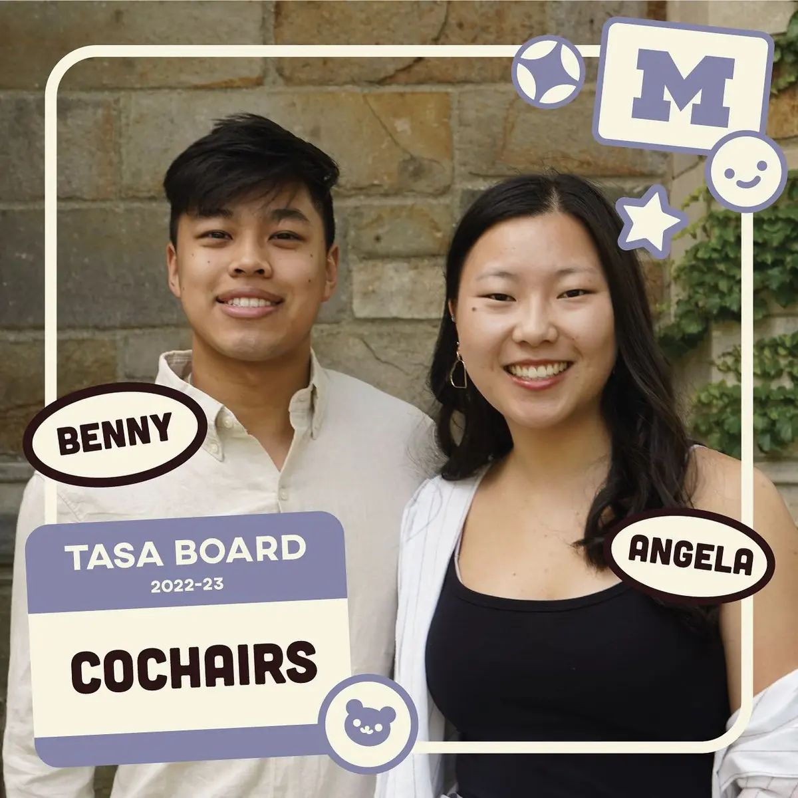
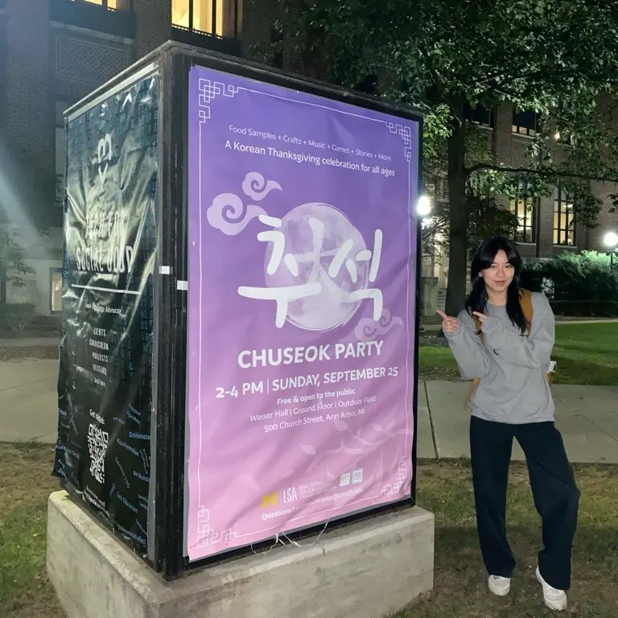

play
Art, sketches and other creative explorations. I have fun working in other mediums too, and many of these are from my art minor.
Marketing


Risograph art


Ceramics


Printmaking


Book art and design
I want to forget, 2024
Risograph printing, link-stitch and stab binding, vellum, Japanese embroidery thread, Japanese book cloth, binder's board, mohawk paperweight.


Displayed at:
- Ritual — 23 Sandy and Baylor University Libraries, Waco, TX (2025)
- Path to Precision — Neuroarts Productions, Ann Arbor, MI (2025)
- Permanently in the Moody Memorial Library at Baylor University.
Read the book below!